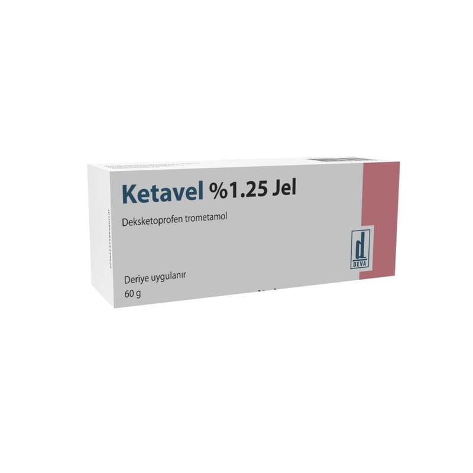

Ketavel %1.25 JEL,60 g, 1 Tüp

Ne için kullanılır
KT · Bölüm 12. KETAVEL’i kullanmadan önce dikkat edilmesi gerekenler. 3. KETAVEL nasıl kullanılır? 4. Olası yan etkiler nelerdir? 5. KETAVEL’in Saklanması Ba şlıkları yer almaktadır.
1. KETAVEL nedir ve ne için kullandır? KETAVEL, steroid olmayan antiinflamatuvar ilaçlar (NSA İİ) olarak adlandırılan ilaç grubundan bir a ğrı kesicidir. KETAVEL eklem, tendon (kasların kemiklere ba ğlanmasını sağlayan yapı), ligament (kemikleri bir arada tutan sert bağ dokusu) ve kaslarda travmatik ya da dejeneratif kökenli a ğrılı ve iltihaplı durumların tedavisinde kullanılır.
KETAVEL eklem, tendon, ligament ve kaslardaki hasarlı bölgelerde ağrı ve iltihaba neden olan maddelerin oluşumunu önleyerek ya da azaltarak etki gösterir. Jel, bölgesel olarak uygulandığında uygulanan bölgede ağrı ve şişliği azaltır. KETAVEL jel, etkin madde olarak deksketoprofen (trometamol olarak) içerir ve 60 g jel içeren alüminyum tüp içerisinde sunulur.